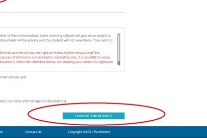

Ordering Transcripts From Parchment.com
By Maricel Manglicmot
Type https://www.parchment.com/ in your web browser. Alternatively, you can also click on the link here.
Click on "I Would Like To…" from the drop-down menu and select "order my transcripts or credentials."
Click on "Order from…" in the search bar.

Type “East Side Adult Education Program” and make sure to select the program from San Jose.
The following schools are covered under this search:
- Overfelt Adult Center
- Independence Adult Center
DO NOT just type "Independence" because it could auto-fill to Independence High School!

Login or create an account. You will have to scroll down to create an account if you have not used parchment.com before.
If you already have an account with parchment.com, click on "Existing User Account" to continue.
You can now enter your personal information.
Scroll down and select graduation year. Read the privacy rights. Check or uncheck the box (your decision) and click on “Consent and Request”. On the next screen, fill out the information to send your transcript.
***Any opened envelopes delivered to the school will not be considered official.***
